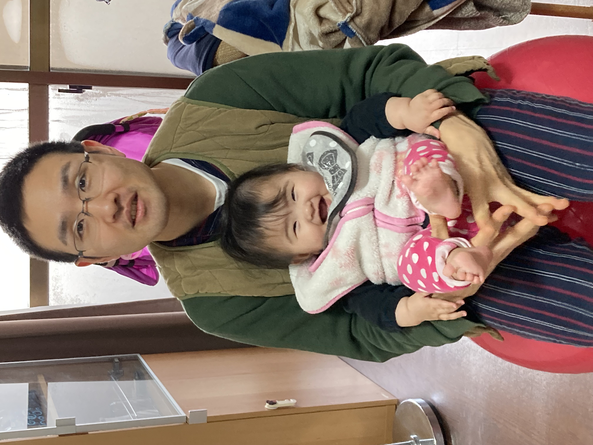

すべての悩みは対人関係から生じる！他者との競争をなくせば幸せになれる【アドラー心理学】
2023-02-14 by 内田裕之
- 「恋人に裏切られた過去があるからもう恋愛ができない」
- 「どうせ私なんて仕事ができないから価値がない」
この記事はそんな方へ向けて書いています。
こんにちは。
人生をより良くするために心理学を学ぶうっちゃんです。
どうせ私が頑張ったところで何もできないとあきらめていませんか？
実は劣等感をバネに努力する勇気が足りないからあきらめているのです。
この記事ではアドラー心理学の本「嫌われる勇気」の第二章から学んだことを紹介します。
人間関係を良くする知識として役立つと嬉しいです。
参考文献↓

（参考：トラウマは存在しない！？人は目的にかなう行動をとっている【アドラー心理学】）
この記事は内容に広告・プロモーションを含みます。
■目次
嫌われる勇気から学んだこと

嫌われる勇気はアドラー心理学の本質を対話形式で教えてくれる本です。
アルフレッド・アドラーはフロイト、ユングと並び心理学の三大巨頭と称されるほど偉大な人物です。
世界的名著「人を動かす」の著書D・カーネギーなど自己啓発のメンターたちに多大な影響を与えています。
「どうすれば人は幸せに生きることができるか」
アドラーはきわめてシンプルかつ具体的な答えを教えてくれます。
今回は嫌われる勇気の第二章すべての悩みは対人関係から学んだことを紹介します。
人は有能になりたい
人は無力から脱したい、向上したいと願う本能を持っており、これを優越性の追求といいます。
分かりやすいのは赤ちゃんです。
歩けるようになるために寝返りやずり這い、ハイハイ、つかまり立ちと段階を踏んで毎日トレーニングをしています。
また、話せるようになるために声を真似したり、意味をたくさん聞いたり、積極的に言葉を使います。
このように人は無力から脱したい本能を持っています。
しかし、理想の状態に到達するまでには時間がかかるもの。
できない自分に対してまるで劣っているかのような感覚を抱きます。
これこそが劣等感です。
健全な努力のあり方
健全な努力とは、劣等感を取り除くためにより前進しようと努力することです。
例えば恋愛がうまく行かないなら服装を見直したり、メイクを見直したり、たくさんの人に会う努力があげられます。
仕事で言えば自己啓発や反省があるでしょう。
健全な努力を行うには課題に立ち向かう勇気が必要です。
劣等感をバネに努力する勇気がある人の人生はより豊かになっていきます。
人生から逃げる人の思考
一方で、立ち向かう勇気がない場合は、課題から逃げようとします。
これが人生から逃げている状態、くさいものにフタをしている状態と呼ばれます。
逃げ方には2通りあります。
劣等コンプレックス
劣等感を言い訳に使ってあきらめることです。
AだからBできない。
どうせ私なんて、と言って行動する前からあきらめることもあります。
優越コンプレックス
あたかも自分が優れているかのように振る舞い、偽りの優越感に浸ることです。
不幸自慢によって自分が他者よりも特別であると主張することもあります。
私はこんなに不幸な人生を歩んできたんだ、私を特別扱いしないさいよという具合です。
また、人生から逃げるきっかけは以下のとおりです。
- どうせ自分なんて思考
- どうせがんばったところで思考
- 何もしないうちからあきらめる
- 過去の悲しい体験、トラウマ
- 一歩前に踏み出すのが怖い
- 現実的な努力をしたくない
- 娯楽を犠牲にしてまで変わりたくない
- 今のままが楽
人生から逃げていると自己成長しないのでいつまでも課題が立ちふさがります。
競争を持ち込むと不幸になる
すべての悩みは他者との関係に競争を持ちこむことで生じています。
例えば以下の面で自分と他者を比較していないでしょうか？
- 仕事の内容
- 役職
- 収入
- 運動能力
- コミュニケーション能力
- 自信
- 恋愛
- 子どもの有無
他者との関係を階級構造のように縦の関係で捉えるとつい競争になりがちです。
いずれ他者を敵だとみなすようになり、人間関係が苦しくなります。
他者は味方であると考え、横の関係で付き合えるようになると幸せになれるでしょう。
人間関係の苦しみから解放されたい方はぜひこの本を読むことをおすすめします。
（参考：トラウマは存在しない！？人は目的にかなう行動をとっている【アドラー心理学】）
私の人生を振り返る
アドラー心理学を自分に当てはめて過去を振り返りました。
お恥ずかしい話が多いですが、これも自分を受け入れることだと思います。
ご自身の過去にアドラー心理学を当てはめるときに参考にしていただければと幸いです。
モテる人への嫉妬
私は本当にモテなかったのでよく嫉妬していました。
○人と付き合った、エッチの話などを聞いているときはよくムスッとした顔をしていたと思います。
当時は恋愛に競争を持ち込んでいたんだと思います。
圧倒的な敗者でしたが、、笑
でも、モテない自分を受け入れて努力することをしていなかったのも今振り返れば思い当たります。
また、一人の恋人と長い人生をともに歩むほうが素敵な話なのに、不思議な話です。
高収入な人への嫉妬
なんであの人が稼げるんだ！
私よりも不真面目なのに。
そんな嫉妬がありました。
売上高や収入の話になるとムスッとした顔になっていたと思います。
これも収入面で競争を持ち込んでいた結果です。
では収入を上げるために人に会ったりビジネスを学んだりしたかと言われると、していません。
自分は努力していないのに他者に嫉妬するとは、お恥ずかしい話です。
自信がある人への苦手意識
根拠もないのに自信たっぷりな人には怪訝な表情をしてムスッとしていたと思います。
おそらく自分の自信のなさからうらやましいと感じ、嫉妬していたんだと思います。
自信に競争を持ち込んだ結果です。
いま思えば自信がない人が結果を出すのは難しいので、自信がある振る舞いによって奮い立たせていたんだろうなと思います。
自信があるように見えるからこそ、結果を出せる。
考え方の間違いにも気付けました。
まとめ
今回はアドラー心理学の本「嫌われる勇気」の第二章から学んだことを紹介しました。
- 人は課題に立ち向かう勇気次第で自己成長に大きな差が生まれる。
- 人間関係に競争を持ち込むと生きづらくなる。横の関係で他者は味方であると考えよう。
この記事が面白いと思ったらTwitterやブログで紹介していただけますと嬉しいです。
ここまで読んでいただきありがとうございます。
参考文献↓